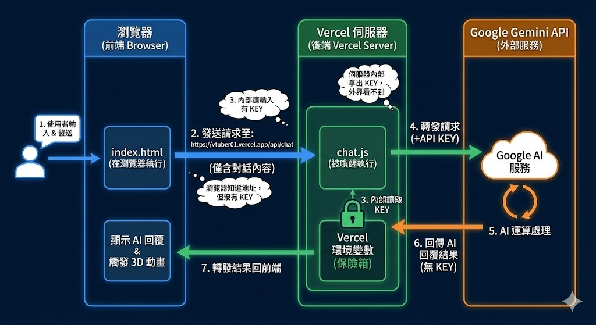
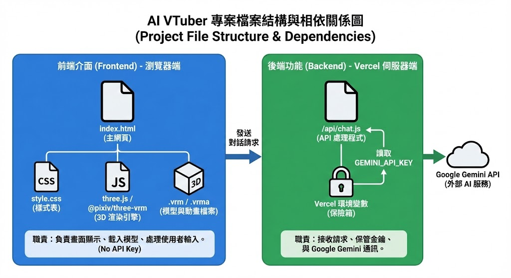
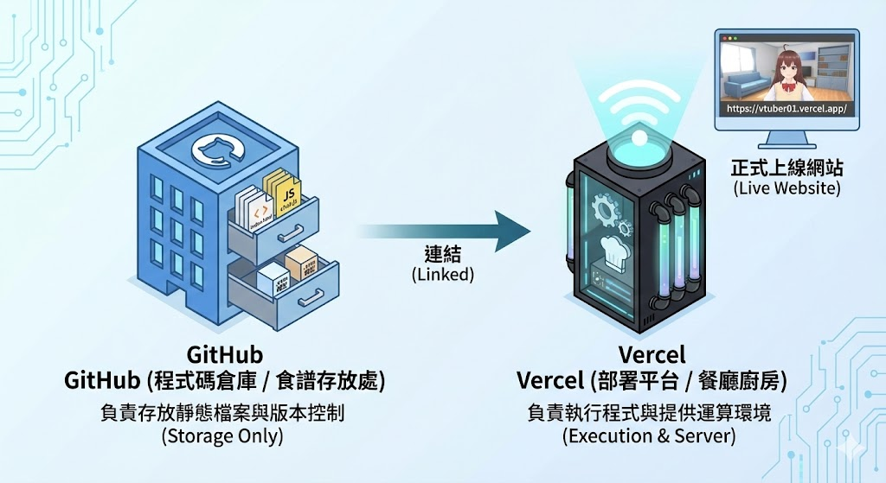
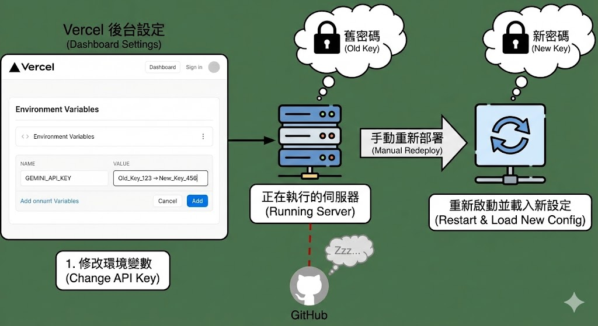

想擁有一個專屬於自己的虛擬偶像（VTuber）嗎？想讓它不只能動、能笑，還能聽得懂你的話，像真正的真人一樣跟你聰明對話嗎？
這份講義將帶你化身為「全端工程師」，從零開始剖析一個結合了 3D 動畫、語音辨識、AI 語言模型（Google Gemini）與雲端伺服器 的超強網頁應用程式。我們不會丟出一大堆艱澀的火星文要你死記硬背，而是用最生動的生活比喻，帶你一步步看懂這些程式碼的魔法，最終將你的專屬 AI 部署到雲端，讓全世界都能連線與它對話！準備好大顯身手了嗎？讓我們開始吧！
（vtuber-3dgame-tutorial.zip）
本專案 (https://vtuber-3dgame.vercel.app/) 是一個整合了 3D 虛擬角色渲染、語音辨識、文字轉語音，以及大型語言模型 (Google Gemini API) 的全端互動網頁。
現代的網頁應用程式通常講求「分工合作」，我們將系統分為「前端」與「後端」兩大部分：
index.html 檔案。它就像是「餐廳的裝潢與服務生」，在您的瀏覽器（如 Chrome、Edge）裡面執行，負責把 3D 人物畫出來，並接收您的點餐（輸入對話）。chat.js 檔案。它就像是「餐廳的廚房與金庫」，在遠端的雲端伺服器上執行，負責保管跟 AI 溝通的秘密金鑰，並幫忙向 Google 總部索取答案。這不只是一個聊天機器人，而是「有身體、有表情的 AI 助教」，非常適合以下場景：
為了讓您對整個系統的運作方式有更具體的想像，請參閱圖1。您可以清楚看到使用者的瀏覽器（前端）是如何透過網路，將對話訊息打包發送給 Vercel 伺服器（後端），再由後端扮演保鑣與翻譯官，代替我們與 Google AI 總部進行安全的通訊。

圖 1：瀏覽器與 Vercel 伺服器通訊流程圖
接著，請參閱圖2，我們為您精準整理了 AI VTuber 專案的「檔案結構與相依關係圖」。這張圖將幫助您在接下來的開發實作中，清楚知道每一支檔案（從 html 到 txt 再到 js）所扮演的關鍵角色與放置位置。

圖 2：AI VTuber 專案檔案結構與相依關係圖 (Project File Structure)
打開我們的前端核心 index.html，您會發現這裡面其實融合了多種強大的技術。讓我們用程式碼片段來為您一一拆解：
任何網頁都脫離不了這三個核心語言：
在網頁底部的對話框，我們使用了一套叫做 Tailwind CSS 的現成工具（透過 CDN 直接引入不須安裝），寫下了一段帶有蘋果 (Apple) 風格的 CSS 程式碼：
bg-white/30 或 bg-white/50，數值越大越白。sm 是小模糊，您可以改成 md (中)、lg (大) 或 xl (超大)，數值越大，背後的 3D 模型就會被糊得越朦朧！要在平面的網頁上顯示立體的 3D 模型，我們使用了名為 Three.js 的技術。它就像是在網頁裡搭了一個虛擬攝影棚，我們在程式中架設了環境光、地板、展示台、光圈，甚至加入了動態漂浮的粒子特效（Particle）。
模型匯入後，我們透過 @pixiv/three-vrm 套件對模型進行了優化，包含讓兩隻手臂微微下垂（改變 leftUpperArm 的角度），讓角色站姿更自然。最酷的是，仔細看畫面中的美智，她的胸口會微微起伏，看起來像真人一樣在呼吸，這是怎麼做到的？請看這段程式碼：
我們運用了國中學過的數學函數——正弦波 Math.sin()。隨著時間 (`time`) 的流逝，這個函數會產生平滑的高低起伏數值。我們把這個數值綁定到胸口骨骼的旋轉角度 (`rotation.x`) 上，就創造出了無比自然的呼吸起伏感！
VRM 是一種專為 3D 虛擬角色設計的標準格式。只要是標準的 VRM，都內建了統一的「表情控制器 (BlendShape)」，可以精準控制五官的各個部位：
neutral(平靜)、happy(開心)、angry(生氣)、sad(悲傷)、relaxed(放鬆)、surprised(驚訝)。blink(雙眼眨)、blinkLeft(左眼眨)、blinkRight(右眼眨)。aa(啊)、ih(伊)、ou(嗚)、ee(ㄟ)、oh(喔)。Q：如果我用免費軟體 VRoid Studio 自己捏角色，匯出的 VRM 1.0 模型也能做到這些表情嗎？
A：完全可以！無縫接軌！ VRoid Studio 匯出的模型（不論是舊版 0.0 或是最新的 VRM 1.0）天生就完美對應了上述所有的標準參數。這意味著您只要從 VRoid 匯出自己的模型，上傳到 GitHub 並替換掉我們專案裡的 `AvatarSample_W.vrm`，您的原創角色立刻就能在網頁上開心微笑、眨眼、跟著講話動嘴巴，一行程式碼都不用改！
網頁上的麥克風按鈕背後，連接著瀏覽器內建的 Web Speech API。這項技術賦予了網頁「耳朵」(SpeechRecognition) 與「嘴巴」(SpeechSynthesis)。
Web Speech API 的發音引擎，其實是呼叫您「手機或電腦作業系統 (Windows/Mac/iOS/Android) 內建的語音包」。
因為我們程式預設寫死為中文 (zh-TW)，如果這時候餵給它其他國家的文字，中文語音引擎看不懂，就會發出怪音或直接略過。
🚀 那麼，網頁真的能講多國語言嗎？
絕對可以！只要您的作業系統有預先安裝好對應國家的語音包（現代 Windows 和 Mac 通常已經內建了非常多國的語音庫）。我們只要透過 JavaScript 將語言代碼改成對應的國家（例如 es-ES 代表西班牙語），就能發出完美的當地發音！請點擊下方按鈕親耳聽聽看：
（※ 提示：如果點擊某個語言後完全沒聲音或發出中文字的怪音，這就完美印證了「您的電腦/手機作業系統恰好沒有安裝該國家的語言包」，您可以自行到系統設定中下載安裝！）
setTimeout 計時器就會自動幫您把語音文字送出去，非常直覺！AI 其實預設是沒有記憶的（每次對話它都當作全新的一天）。為了解決這個問題，我們在 JavaScript 裡宣告了一個名為 conversationHistory (對話歷史) 的「陣列」(Array，可以想像成一個有順序的清單)。
每次您點擊發送時，我們其實是把「整串歷史清單」連同您最新的問題，整包一起寄給後端，這樣 AI 才能看著前面的對話記錄，做出有上下文連貫的自然回應！
這份講義的網頁與您的 AI VTuber 專案，都是百分之百相容手機與平板的「響應式網頁」！
為了讓網頁在小小螢幕的手機上依然完美呈現，我們在 index.html 中加入了以下幾項專為手機打造的巧思：
此外，我們的 3D 引擎 (Three.js) 也寫入了 window.addEventListener('resize') 功能。當您旋轉手機螢幕方向時，3D 畫面與相機會自動重新計算比例，確保美智永遠完美地站在畫面的正中央！
在我們的專案資料夾裡，除了寫程式碼，我們還放置了兩個非常關鍵的純文字檔（`.txt`）。我們運用了 JavaScript 的 `fetch` 功能在網頁啟動時去把這兩個檔案「抓」進來。這代表什麼？這代表未來您要更改助教的個性或學校資訊，完全不用改原始程式碼，只要修改這兩個文字檔就可以了！
這是 AI 的人設劇本。在這裡我們告訴 AI：「你叫美智，是一個活潑的虛擬助教」。如果不寫這個檔案，AI 只會覺得自己是一個冷冰冰的 Google 語言模型助手，不會展現出學園助教的個性。
這是 AI 的專屬小抄。大型 AI 雖然懂很多天文地理，但它可能不知道你們學校「最私密的規定」或「剛成立的新科系」。我們把這些專屬資料寫在這裡，讓 AI 照著念，防止它亂編內容（這在 AI 領域稱為防止「幻覺 Hallucination」）。
在本專案中，我們將學校資訊全寫在 knowledgebase.txt 中。每次對話時，程式都會把「整份文字檔內容」連同使用者的問題一起暴力塞給 AI 看。這種作法稱為「上下文注入 (Context Stuffing)」。
為了讓 AI 的回答最精準且符合我們預期，我們在 index.html 中傳送了一段超級嚴格的「系統指示 (System Instruction)」，規範了 AI 尋找答案的順序：
tools: [{ google_search: {} }] 讓 AI 具備上網能力。當我們把對話送給 AI，AI 除了要給我們「回覆的文字」，還要同時告訴網頁「它現在是什麼表情」以及「有沒有特殊動作（如眨眼）」。為了讓網頁程式看得懂，我們在提示詞中強制要求 AI 回傳一種名為 JSON 的格式。
JSON 就像是把資料打包成「有貼標籤的包裹」。網頁收到包裹後，會用 JSON.parse() 把包裹拆開，把 `reply` 標籤裡的字唸出來顯示在畫面上，並抓取 `expression` 標籤的字（如 happy 快樂, sad 悲傷 等）去改變 3D 模型的表情！
嘴型同步 (Lip-Sync)：程式中還有一個很聰明的設計，當 AI 開始講話時，系統會強制模型保持微笑 (`happy`)，並運用另一個 `Math.sin()` 數學函數快速震盪改變 `aa` 這個負責張口的動作參數，就能模擬出嘴巴開合講話的逼真效果！
有時候 AI 會「自作聰明」，在回傳的 JSON 外面包了一層 Markdown 標籤（如 ```json ）。這會導致網頁解析失敗崩潰。為了防止這種情況，我們使用了一段名為正則表達式 (Regex) 的程式碼：
這段神奇的代碼就像是一個「精準夾子」，它會無視外面的任何雜訊，強行從文字中把 `{` 到 `}` 之間的正確 JSON 包裹夾出來，確保系統穩定運作不中斷！
我們一直說，為了保護 API 密碼金鑰不被偷走，前端必須把使用者的對話發送給後端 chat.js 處理。
是的，這是 Vercel 的專屬魔法！ Vercel 規定，只要您把 JavaScript 檔案放在名為 api 的資料夾裡面，Vercel 佈署時就會自動啟用 Serverless Functions (無伺服器函式) 功能，並在背後為我們準備好 Node.js 執行環境。如果沒有放在這裡，Vercel 只會把它當成普通的純文字檔，AI 就沒辦法回話了！
不一定！檔名其實就是「網址的門牌號碼（路由）」。
因為我們取名為 chat.js，所以 Vercel 會自動幫我們生成一組 API 網址：/api/chat。如果您把檔案改名叫 bot.js，那網址就會變成 /api/bot。
如果您打開 index.html，尋找 sendMessage() 這個函數，您會看到我們用 JavaScript 的 `fetch` 語法，準確地敲響了這個後端廚房的門牌號碼：
現在您用的是 Google 佛心提供的 **Gemini API 免費版 (Free Tier)**。這就像是拿著「免費試吃券」去 Google 大廚房點餐。免費版有嚴格的限制：每分鐘最多只能點 15 次餐 (15 RPM)，每天最多 1,500 次。
想像一下，如果您的 VTuber 網頁爆紅，突然有 20 個同學同時瘋狂跟她講話，一分鐘超過 15 次，Google 警衛就會立刻封鎖您的連線，噴出 `429 Too Many Requests` 的錯誤！而大型企業使用的 **付費版 (Pay-as-you-go)**，就像是接通了專屬的大水管，依照用量計費，每分鐘可以承受成千上萬次的請求不塞車。
因為我們用的是免費版，所以在 `chat.js` 裡我們寫了一段名為 **Rate Limit Map** 的防刷程式碼。這就像是我們自己在 Vercel 門口請了保全，只要偵測到「同一個 IP 一分鐘內狂點超過 15 次」，我們的保全就會先擋下他。我們寧可自己先阻擋惡意連點，也不要讓整支 API Key 被 Google 暫時封鎖停權！
在程式碼中，我們需要告訴網頁去哪裡讀取 prompt.txt 或是 AvatarSample_W.vrm。請看這段程式寫法：
這裡的 ./ 意思是「跟目前執行這個程式的 index.html 檔案，位在同一個資料夾底下」。
為什麼我們絕對不能在這裡貼上一整串絕對位址（如 `https://github.com/...`）呢？
因為，如果您在建立 GitHub 倉庫時，選擇了保護隱私的 Private (私有倉庫)，這代表您把檔案鎖起來了。如果您在程式碼寫死外部絕對網址去抓檔案，瀏覽器去抓檔案時，就會被 GitHub 的大門保全擋住（因為瀏覽器沒有權限登入您的 GitHub），最後導致 3D 模型載不出來，網頁一片空白（發生 404 錯誤）！
相反地，使用 ./ 相對位址，這意味著 Vercel 在佈署時，會把您的 HTML 跟旁邊的文字檔、模型「整包」一起打包到它自己的雲端主機內部。網頁啟動時，直接向內部的鄰居索取檔案，就完全不會有被 GitHub 擋住的權限問題了！
業界最標準的上線作法，是結合 GitHub (存放程式碼的倉庫) 與 Vercel (負責執行網站的主機)。
請參閱圖3，這張放大圖完整展示了 GitHub 與 Vercel 之間的完美分工架構，您可以清楚看到原始碼是如何從倉庫安全地轉移到主機上執行：

圖 3：GitHub (倉儲) 與 Vercel (主機) 的完美分工
當開發者修改了 index.html，並上傳 (Push) 到 GitHub 時，GitHub 會發送一個 Webhook (網頁掛鉤) 給 Vercel。這就像是 GitHub 跑去 Vercel 門口「自動按門鈴」大喊：「有新檔案了！」
Vercel 聽到門鈴後，就會啟動 CI/CD (持續整合與部署) 的自動化流水線，自動更新網頁。您完全不需要手動點擊任何按鈕。
詳細的自動化流程，請參閱圖4的網站自動更新流程圖（CI/CD Pipeline），它完美詮釋了上述「按門鈴」後的連鎖反應。
圖 4：網站自動更新流程圖 (CI/CD Pipeline)
這是一個初學者最常卡關的地方！為了資訊安全，我們把 Google AI 的密碼 (API KEY) 存在 Vercel 網站後台的「環境變數 (保險箱)」裡。
請注意！當您在 Vercel 後台修改保險箱的密碼時，您並沒有修改 GitHub 裡面的任何檔案，所以「GitHub 根本不知道這件事，也不會去幫您按 Vercel 的門鈴」！
因為沒有人按門鈴，Vercel 伺服器就不會重新啟動。因此，更換 API Key 後，您必須自己在 Vercel 網站手動點擊 Redeploy (重新佈署)，強迫伺服器斷電重開機，chat.js 才能拿到熱騰騰的新鑰匙！
如果您對此觀念還是有點模糊，請參閱圖5的手動重新佈署流程圖。這張圖非常直觀地比較了「修改一般檔案」與「修改保險箱金鑰」時，系統行為的巨大差異，清楚展示了更換金鑰後必須手動觸發的關鍵步驟：

圖 5：更換 API 金鑰後，必須「手動重新佈署」的流程圖
在我們後端 chat.js 的開頭，有一段非常關鍵的程式碼：
為什麼我們必須寫這行程式碼來限制來源？因為如果駭客知道了我們 Vercel 伺服器後端的網址，他大可以在自己的電腦上寫一個惡意網頁，偷偷發送無數個請求到我們伺服器，瘋狂消耗我們 Google API 的額度！
您可以把伺服器 (chat.js) 想像成一間「私人 VIP 俱樂部」。
使用者的「瀏覽器（如 Chrome）」就是俱樂部門口的「保全」。
當任何網頁想要發送請求到 chat.js 時，保全會先問俱樂部：「這個發送請求的網頁，它的網址有在你們的 allowedOrigins (VIP 邀請白名單) 上嗎？」
如果伺服器說「沒有核發通行證」，這時候最厲害的事情發生了：駭客的瀏覽器（保全）自己就會跳出紅色的 CORS Error，直接把駭客的惡意請求擋在門外！這就是我們守護雲端資產的第一道也是最重要的一道防線。
首先，請點擊上方按鈕下載 vtuber-3dgame-tutorial.zip，並在自己的電腦上解壓縮它。接著登入您的 GitHub 帳號。點擊右上角的 + 按鈕，選擇 New repository 建立新的倉庫。
進入剛建好的倉庫，點擊畫面中上方的 Add file -> Upload files。將剛剛解壓縮出來的 4 個檔案與 3D 模型檔案全部拖曳進去，並點擊下方的綠色 Commit changes 按鈕存檔。
api 的資料夾，並將 chat.js 這個檔案放進 api 資料夾裡面！登入 Vercel 官網，點擊首頁右上角的黑底白字按鈕 Add New... -> Project。
在左側列表中找到您剛剛在 GitHub 建立的倉庫，點擊旁邊的藍色 Import 按鈕。
在 Import 之後出現的專案設定畫面中，請向下滾動找到 Environment Variables (環境變數) 選單並展開它：
GEMINI_API_KEY（大小寫必須完全相符）。確認設定完畢後，點擊畫面最下方大大的 Deploy 按鈕。等待大約一分鐘，看到灑花慶祝的畫面出現，恭喜您，專案正式上線了！
1. GitHub 網址 ([github.com/帳號/專案](https://github.com/帳號/專案))：
這是開發者與工程師專用的「廚房後台」，裡面存放的全是密密麻麻的程式碼原始檔（也就是食譜）。把這個網址丟給一般朋友，他們只會看到一堆程式碼，看不到會動的 3D 網頁畫面！
2. Vercel 網址 (您的專案.vercel.app)：
這是 Vercel 幫您編譯、建置好之後，開放給全世界客人參觀的「餐廳正門口」。請把這個 .vercel.app 結尾的網址分享給朋友，他們只要點開連結，就能在手機或電腦上立刻看到美智虛擬助教，並開始用語音與它對話！
回顧這趟旅程，您已經完成了一項非常了不起的成就！我們不僅寫出了一個精美的網頁（前端），還學會了如何撰寫提示詞與知識庫（AI 溝通工程），建立安全的保險箱（後端 API），並透過 GitHub 與 Vercel 完成了 CI/CD 全自動雲端佈署。
您現在所掌握的這套「前端介面 ➔ 後端安全路由 ➔ LLM 大語言模型」架構，正是目前全球頂尖科技公司開發 AI 產品最標準、最正統的作法。有了這個基礎，未來無論您是要將它改造為企業客服、醫療問答，還是語言學習工具，都已經具備了無限擴充的超能力！
請同學利用右上角的「Copy」按鈕，將以下四個檔案的完整程式碼複製並貼上到您的 GitHub 專案檔案中。我們保證這裡的程式碼與範例運作的版本一字不漏完全相同，請安心複製！
// 簡易的 IP Rate Limiting 狀態儲存 (注意: 在 Vercel Serverless 中每次啟動可能重置，但仍具備短時間防護作用)
const rateLimitMap = new Map();
const RATE_LIMIT_WINDOW_MS = 60000; // 1 分鐘
const MAX_REQUESTS_PER_WINDOW = 15; // 每分鐘最多 15 次請求，防刷配額
export default async function handler(req, res) {
// 1. 設定 CORS 標頭，嚴格限制來源 (白名單)
const allowedOrigins = ['[https://vtuber-3dgame.vercel.app](https://vtuber-3dgame.vercel.app)'];
const origin = req.headers.origin;
if (allowedOrigins.includes(origin)) {
res.setHeader('Access-Control-Allow-Origin', origin);
} else if (origin && origin.includes('localhost')) {
res.setHeader('Access-Control-Allow-Origin', origin);
}
res.setHeader('Access-Control-Allow-Methods', 'OPTIONS, POST');
res.setHeader('Access-Control-Allow-Headers', 'Content-Type');
// 2. 處理瀏覽器的預檢請求 (Preflight)
if (req.method === 'OPTIONS') {
return res.status(200).end();
}
// 只允許 POST 方法
if (req.method !== 'POST') {
return res.status(405).json({ error: 'Method Not Allowed' });
}
// --- 安全性加強：簡易 Rate Limiting ---
const ip = req.headers['x-forwarded-for'] || req.socket?.remoteAddress || 'unknown';
const currentTime = Date.now();
if (rateLimitMap.has(ip)) {
const clientData = rateLimitMap.get(ip);
if (currentTime - clientData.startTime < RATE_LIMIT_WINDOW_MS) {
if (clientData.count >= MAX_REQUESTS_PER_WINDOW) {
return res.status(429).json({ error: '請求過於頻繁 (Rate Limit Exceeded)，請稍後再試。' });
}
clientData.count++;
} else {
rateLimitMap.set(ip, { count: 1, startTime: currentTime });
}
} else {
rateLimitMap.set(ip, { count: 1, startTime: currentTime });
}
// -------------------------------------
const apiKey = process.env.GEMINI_API_KEY;
if (!apiKey) {
console.error("錯誤: 找不到 GEMINI_API_KEY 環境變數");
return res.status(500).json({ error: '伺服器端環境變數設定錯誤' });
}
try {
// --- 安全性加強：Payload 驗證與重組 ---
// 拒絕直接轉發 req.body，而是從中提取允許的欄位
const { contents, systemPrompt, knowledgeBase } = req.body;
if (!contents || !Array.isArray(contents)) {
return res.status(400).json({ error: '無效的對話格式' });
}
// 後端嚴格把控 System Instruction 的格式，確保 JSON 與核心邏輯不會被前端覆蓋
const defaultPrompt = "你是一個專業的 AI 虛擬助教，回答要簡短生動。";
const safeSystemPrompt = systemPrompt ? systemPrompt : defaultPrompt;
const safeKnowledgeBase = knowledgeBase ? knowledgeBase : "";
const fullSystemInstruction = `${safeSystemPrompt}\n\n【重要指示】\n為了讓系統正確解析動作，請務必「只」回傳純 JSON 格式的文字，不要加上 \`\`\`json 標籤或任何其他說明。JSON 格式必須為：\n{\n "reply": "你的回覆內容",\n "expression": "情緒(neutral, happy, angry, sad, relaxed, surprised)",\n "specialAction": "動作(none, blink, blinkLeft, blinkRight, aa)",\n "actionDuration": 3\n}\n\n【知識庫內容】\n${safeKnowledgeBase}`;
// 重新封裝要傳送給 Gemini 的資料結構
const geminiPayload = {
contents: contents,
systemInstruction: { parts: [{ text: fullSystemInstruction }] },
// 修正：Gemini API 官方規定的工具名稱必須是底線分隔的 google_search
tools: [{ google_search: {} }]
};
// -------------------------------------
const googleApiUrl = `https://generativelanguage.googleapis.com/v1beta/models/gemini-2.5-flash:generateContent?key=${apiKey}`;
const response = await fetch(googleApiUrl, {
method: 'POST',
headers: { 'Content-Type': 'application/json' },
body: JSON.stringify(geminiPayload) // 發送經過我們後端重組與淨化過的安全 Payload
});
const data = await response.json();
if (!response.ok) {
return res.status(response.status).json(data);
}
return res.status(200).json(data);
} catch (error) {
console.error('向 Gemini API 請求時發生錯誤:', error);
return res.status(500).json({ error: '後端伺服器發生未預期的錯誤' });
}
}<!DOCTYPE html>
<html lang="zh-TW">
<head>
<meta charset="UTF-8">
<!-- 針對行動裝置優化：禁止縮放，防止 iOS 點擊輸入框時自動放大畫面 -->
<meta name="viewport" content="width=device-width, initial-scale=1.0, maximum-scale=1.0, user-scalable=no">
<title>AI 虛擬助教</title>
<!-- 引入 Tailwind CSS 作為 UI 樣式 -->
<script src="[https://cdn.tailwindcss.com](https://cdn.tailwindcss.com)"></script>
<style>
/* 加入 touch-action: none 防止手機滑動時觸發下拉更新或返回手勢 */
body { margin: 0; overflow: hidden; background-color: #1a202c; touch-action: none; }
#canvas-container { width: 100vw; height: 100vh; position: absolute; top: 0; left: 0; z-index: 0; }
#ui-layer { position: absolute; top: 0; left: 0; width: 100%; height: 100%; z-index: 10; pointer-events: none; }
.pointer-events-auto { pointer-events: auto; }
/* 隱藏滾動條但保留滾動功能 (針對對話框內部) */
.no-scrollbar::-webkit-scrollbar { display: none; }
.no-scrollbar { -ms-overflow-style: none; scrollbar-width: none; }
</style>
<!-- 設定 Three.js 與 Three-VRM 的 Import Map -->
<script type="importmap">
{
"imports": {
"three": "[https://cdn.jsdelivr.net/npm/three@0.160.0/build/three.module.js](https://cdn.jsdelivr.net/npm/three@0.160.0/build/three.module.js)",
"three/addons/": "[https://cdn.jsdelivr.net/npm/three@0.160.0/examples/jsm/](https://cdn.jsdelivr.net/npm/three@0.160.0/examples/jsm/)",
"@pixiv/three-vrm": "[https://unpkg.com/@pixiv/three-vrm@3.2.0/lib/three-vrm.module.js](https://unpkg.com/@pixiv/three-vrm@3.2.0/lib/three-vrm.module.js)"
}
}
</script>
</head>
<body>
<!-- WebGL 渲染容器 -->
<div id="canvas-container"></div>
<!-- UI 介面層 -->
<div id="ui-layer" class="flex flex-col justify-end p-4 relative">
<!-- 底部中央對話整合容器 (極高透明度薄玻璃質感，包覆文字與輸入框) -->
<div class="absolute bottom-6 left-1/2 transform -translate-x-1/2 w-[calc(100%-2rem)] sm:w-full max-w-lg pointer-events-auto flex flex-col gap-3 bg-white/10 backdrop-blur-sm p-4 rounded-2xl shadow-sm border border-white/30 z-10 transition-all duration-300">
<!-- 對話氣泡窗 (預設隱藏，被透明面板完全包住) -->
<div id="chat-bubble" class="hidden px-2 max-h-40 overflow-y-auto no-scrollbar">
<!-- 深藍色文字且粗細改為 font-medium -->
<p id="chat-text" class="text-lg text-blue-900 font-medium leading-relaxed drop-shadow-sm"></p>
</div>
<!-- 底部對話輸入框 -->
<div class="flex gap-2 w-full">
<!-- 新增：語音輸入按鈕 -->
<button id="mic-btn" class="bg-white/20 hover:bg-white/30 backdrop-blur text-blue-900 px-3 py-3 rounded-xl shadow-inner border border-blue-900/10 transition-colors shrink-0 flex items-center justify-center" title="語音輸入">
<svg id="mic-icon" class="w-6 h-6" fill="none" stroke="currentColor" viewBox="0 0 24 24" xmlns="[http://www.w3.org/2000/svg](http://www.w3.org/2000/svg)">
<path stroke-linecap="round" stroke-linejoin="round" stroke-width="2" d="M19 11a7 7 0 01-7 7m0 0a7 7 0 01-7-7m7 7v4m0 0H8m4 0h4m-4-8a3 3 0 01-3-3V5a3 3 0 116 0v6a3 3 0 01-3 3z"></path>
</svg>
</button>
<input type="text" id="chat-input" placeholder="與角色對話..." class="flex-1 bg-white/20 text-blue-900 placeholder-blue-800/50 px-4 py-3 rounded-xl border border-blue-900/10 focus:outline-none focus:border-blue-900/30 focus:bg-white/40 shadow-inner text-base transition-colors font-medium" />
<button id="send-btn" class="bg-blue-800/70 hover:bg-blue-700/80 active:scale-95 active:bg-blue-900 backdrop-blur text-white px-5 py-3 rounded-xl shadow transition-all duration-150 font-bold text-base shrink-0">發送</button>
</div>
</div>
<div class="flex justify-between items-end w-full">
<!-- 左下角：AI 虛擬助教面板 (目前隱藏) -->
<div class="hidden bg-gray-900/70 backdrop-blur-md text-white p-4 rounded-xl shadow-xl border border-gray-700/50 max-w-xs pointer-events-auto flex-col gap-3">
<div class="flex items-center justify-between">
<h1 class="text-lg font-bold text-blue-400">AI 虛擬助教</h1>
<div class="flex items-center gap-3">
<div id="status-light" class="w-3 h-3 rounded-full bg-green-500 shadow-[0_0_8px_rgba(34,197,94,0.8)] transition-colors" title="API狀態：準備就緒"></div>
</div>
</div>
<p class="text-xs text-gray-300">系統已自動載入預設角色模型。您可以直接與其展開對話。</p>
<div id="loading-status" class="mt-3 text-xs text-yellow-400 flex items-center justify-center">
<svg class="animate-spin -ml-1 mr-2 h-3 w-3 text-yellow-400" xmlns="[http://www.w3.org/2000/svg](http://www.w3.org/2000/svg)" fill="none" viewBox="0 0 24 24">
<circle class="opacity-25" cx="12" cy="12" r="10" stroke="currentColor" stroke-width="4"></circle>
<path class="opacity-75" fill="currentColor" d="M4 12a8 8 0 018-8V0C5.373 0 0 5.373 0 12h4zm2 5.291A7.962 7.962 0 014 12H0c0 3.042 1.135 5.824 3 7.938l3-2.647z"></path>
</svg>
模型載入中...
</div>
<div id="error-status" class="mt-3 text-xs text-red-400 hidden text-center"></div>
</div>
<!-- 右下角：操作說明面板 (目前隱藏) -->
<div class="hidden bg-gray-900/70 backdrop-blur-md text-white p-3 rounded-xl shadow-lg border border-gray-700/50 text-xs pointer-events-auto">
<h3 class="font-bold text-gray-200 mb-1 border-b border-gray-600 pb-1">操作說明</h3>
<ul class="space-y-1 text-gray-400">
<li><span class="text-blue-400 font-bold">左鍵</span> : 旋轉視角 / <span class="text-blue-400 font-bold">右鍵</span> : 平移</li>
<li><span class="text-blue-400 font-bold">滾輪</span> : 縮放</li>
</ul>
</div>
</div>
</div>
<script type="module">
import * as THREE from 'three';
import { OrbitControls } from 'three/addons/controls/OrbitControls.js';
import { GLTFLoader } from 'three/addons/loaders/GLTFLoader.js';
import { VRMLoaderPlugin, VRMUtils } from '@pixiv/three-vrm';
// --- 全域變數 ---
let scene, camera, renderer, controls;
let currentVrm = undefined;
let particles;
const clock = new THREE.Clock();
// 知識庫與設定變數
let knowledgeBaseText = "";
let systemPromptText = "你是一個擁有 3D 虛擬身體的 AI 虛擬助教。你的名字叫做『美智』。當使用者詢問你的名字時，請務必回答『美智』。若使用者要求你做動作（如閉眼、張口等），請在文字回覆中自然地答應，並在 JSON 中設定對應動作。絕對不要說自己無法做動作或沒有身體！回答要簡短生動。";
let openingPhrase = "您好！我是美智，文藻的 AI 虛擬助教，有什麼我可以幫忙的嗎？";
// 表情控制變數
let expressionTimer = 0;
let expressionBlend = 1;
let currentExpression = 'neutral';
let targetExpression = 'neutral';
const expressions = ['happy', 'angry', 'sad', 'relaxed', 'surprised', 'neutral'];
// 特殊動作控制變數
let activeSpecialAction = null;
let specialActionTimer = 0;
// 對話與語音變數
let isSpeaking = false;
let lipSyncTimer = 0;
let conversationHistory = [];
// 新增全域變數，用於追蹤是否要自動重啟麥克風
let autoRestartMic = false;
// --- 載入外部設定檔 (知識庫與提示詞) ---
async function loadConfig() {
try {
let promptUrl = './prompt.txt';
let kbUrl = './knowledgebase.txt';
if (window.location.protocol === 'blob:' || window.location.hostname.includes('usercontent.goog')) {
promptUrl = '[https://vtuber-3dgame.vercel.app/prompt.txt](https://vtuber-3dgame.vercel.app/prompt.txt)';
kbUrl = '[https://vtuber-3dgame.vercel.app/knowledgebase.txt](https://vtuber-3dgame.vercel.app/knowledgebase.txt)';
}
const [promptRes, kbRes] = await Promise.all([
fetch(promptUrl).catch(() => null),
fetch(kbUrl).catch(() => null)
]);
if (kbRes && kbRes.ok) {
knowledgeBaseText = await kbRes.text();
console.log("知識庫載入成功");
}
if (promptRes && promptRes.ok) {
const fullPromptText = await promptRes.text();
// 使用正則表達式，同時支援 === 或 --- 作為分隔符號
const parts = fullPromptText.split(/[=-]{3}\s*提示詞\s*[=-]{3}/);
if (parts.length > 1) {
openingPhrase = parts[0].replace(/[=-]{3}\s*開場詞\s*[=-]{3}/, '').trim();
// 修正關鍵：將名字「美智」的指令置於提示詞的最前方，確保 AI 優先讀取
systemPromptText = "你的唯一名字是『美智』。請記住：『文藻AI虛擬助教』只是你的職稱職位，並非你的名字。當被問及姓名時，請回答『美智』。" + parts[1].trim() + " (備註：你擁有3D虛擬身體，被要求做動作時請配合。)";
} else {
systemPromptText = fullPromptText.trim();
}
console.log("提示詞載入成功");
}
} catch (error) {
console.warn("載入設定檔失敗，將使用預設設定", error);
}
}
// --- 觸發開場白 ---
function triggerOpeningPhrase() {
if (!openingPhrase) return;
const chatBubble = document.getElementById('chat-bubble');
const chatText = document.getElementById('chat-text');
chatBubble.classList.remove('hidden');
chatText.innerHTML = `${openingPhrase}`; // 已移除「角色：」
speakAndLipSync(openingPhrase);
conversationHistory.push({ role: "model", parts: [{ text: JSON.stringify({ reply: openingPhrase, expression: "happy", specialAction: "none", actionDuration: 3 }) }] });
}
// --- 初始化場景 ---
async function init() {
const container = document.getElementById('canvas-container');
await loadConfig();
scene = new THREE.Scene();
scene.background = new THREE.Color(0xdbe3ea);
scene.fog = new THREE.Fog(0xdbe3ea, 10, 50);
camera = new THREE.PerspectiveCamera(45, window.innerWidth / window.innerHeight, 0.1, 100);
camera.position.set(0, 1.45, -1.6);
renderer = new THREE.WebGLRenderer({ antialias: true, alpha: false });
renderer.setSize(window.innerWidth, window.innerHeight);
renderer.setPixelRatio(window.devicePixelRatio);
renderer.shadowMap.enabled = true;
renderer.shadowMap.type = THREE.PCFSoftShadowMap;
renderer.outputColorSpace = THREE.SRGBColorSpace;
renderer.toneMapping = THREE.ACESFilmicToneMapping;
container.appendChild(renderer.domElement);
controls = new OrbitControls(camera, renderer.domElement);
controls.screenSpacePanning = true;
controls.target.set(0, 1.3, 0);
controls.update();
setupEnvironment();
window.addEventListener('resize', onWindowResize);
let modelUrl = './AvatarSample_W.vrm';
if (window.location.protocol === 'blob:' || window.location.hostname.includes('usercontent.goog')) {
modelUrl = '[https://vtuber-3dgame.vercel.app/AvatarSample_W.vrm](https://vtuber-3dgame.vercel.app/AvatarSample_W.vrm)';
}
loadVRM(modelUrl);
animate();
}
function setupEnvironment() {
const ambientLight = new THREE.HemisphereLight(0xffffff, 0x999999, 0.8);
scene.add(ambientLight);
const directionalLight = new THREE.DirectionalLight(0xfff0dd, 2.0);
directionalLight.position.set(2, 5, 3);
directionalLight.castShadow = true;
directionalLight.shadow.mapSize.width = 2048;
directionalLight.shadow.mapSize.height = 2048;
directionalLight.shadow.bias = -0.001;
scene.add(directionalLight);
const fillLight = new THREE.DirectionalLight(0xcceeff, 1.2);
fillLight.position.set(-2, 2, 2);
scene.add(fillLight);
const floorGeometry = new THREE.PlaneGeometry(50, 50);
const floorMaterial = new THREE.MeshStandardMaterial({ color: 0x8a95a5, roughness: 0.6, metalness: 0.1 });
const floor = new THREE.Mesh(floorGeometry, floorMaterial);
floor.rotation.x = -Math.PI / 2;
floor.receiveShadow = true;
scene.add(floor);
const gridHelper = new THREE.GridHelper(50, 100, 0xb0bac5, 0x8a95a5);
gridHelper.position.y = 0.01;
gridHelper.material.transparent = true;
gridHelper.material.opacity = 0.5;
scene.add(gridHelper);
const pedestalGeometry = new THREE.CylinderGeometry(0.8, 1, 0.1, 32);
const pedestalMaterial = new THREE.MeshStandardMaterial({ color: 0xdbe3ea, roughness: 0.3, metalness: 0.2 });
const pedestal = new THREE.Mesh(pedestalGeometry, pedestalMaterial);
pedestal.position.y = 0.05;
pedestal.receiveShadow = true;
pedestal.castShadow = true;
scene.add(pedestal);
const ringGeometry = new THREE.RingGeometry(0.85, 0.9, 32);
const ringMaterial = new THREE.MeshBasicMaterial({ color: 0xffaa00, side: THREE.DoubleSide, transparent: true, opacity: 0.8 });
const ring = new THREE.Mesh(ringGeometry, ringMaterial);
ring.rotation.x = -Math.PI / 2;
ring.position.y = 0.11;
scene.add(ring);
const particleCount = 200;
const particleGeometry = new THREE.BufferGeometry();
const particlePositions = new Float32Array(particleCount * 3);
const particleColors = new Float32Array(particleCount * 3);
const color = new THREE.Color();
for(let i = 0; i < particleCount; i++) {
particlePositions[i*3] = (Math.random() - 0.5) * 10;
particlePositions[i*3+1] = Math.random() * 5;
particlePositions[i*3+2] = (Math.random() - 0.5) * 10;
color.setHSL(Math.random(), 1.0, 0.5);
particleColors[i*3] = color.r;
particleColors[i*3+1] = color.g;
particleColors[i*3+2] = color.b;
}
particleGeometry.setAttribute('position', new THREE.BufferAttribute(particlePositions, 3));
particleGeometry.setAttribute('color', new THREE.BufferAttribute(particleColors, 3));
const particleMaterial = new THREE.PointsMaterial({ size: 0.08, transparent: true, opacity: 0.9, vertexColors: true });
particles = new THREE.Points(particleGeometry, particleMaterial);
scene.add(particles);
}
function loadVRM(url) {
const loadingUI = document.getElementById('loading-status');
const errorUI = document.getElementById('error-status');
if(loadingUI) loadingUI.classList.remove('hidden');
if(errorUI) errorUI.classList.add('hidden');
const loader = new GLTFLoader();
loader.register((parser) => new VRMLoaderPlugin(parser));
loader.load(
url,
(gltf) => {
const vrm = gltf.userData.vrm;
if (currentVrm) scene.remove(currentVrm.scene);
VRMUtils.removeUnnecessaryVertices(gltf.scene);
VRMUtils.removeUnnecessaryJoints(gltf.scene);
vrm.scene.traverse((obj) => {
obj.frustumCulled = false;
if (obj.isMesh) {
obj.castShadow = true;
obj.receiveShadow = true;
}
});
if (vrm.humanoid) {
const leftUpperArm = vrm.humanoid.getNormalizedBoneNode('leftUpperArm');
const rightUpperArm = vrm.humanoid.getNormalizedBoneNode('rightUpperArm');
if (leftUpperArm) leftUpperArm.rotation.z = -1.1;
if (rightUpperArm) rightUpperArm.rotation.z = 1.1;
}
vrm.scene.position.y = 0.1;
vrm.scene.rotation.y = Math.PI;
scene.add(vrm.scene);
currentVrm = vrm;
if(loadingUI) loadingUI.classList.add('hidden');
console.log('模型自動載入成功!');
triggerOpeningPhrase();
},
undefined,
(error) => {
console.error('模型載入失敗:', error);
if(loadingUI) loadingUI.classList.add('hidden');
if(errorUI) {
errorUI.textContent = '無法載入預設模型 AvatarSample_W.vrm，請確認檔案路徑。';
errorUI.classList.remove('hidden');
}
}
);
}
function animate() {
requestAnimationFrame(animate);
const delta = clock.getDelta();
const time = clock.getElapsedTime();
if (currentVrm) {
if (currentVrm.humanoid) {
const chest = currentVrm.humanoid.getNormalizedBoneNode('chest');
if (chest) chest.rotation.x = Math.sin(time * 1.5) * 0.015;
}
if (currentVrm.expressionManager) {
// 1. 隨機表情計時器邏輯
expressionTimer += delta;
if (expressionTimer > 4.0) {
expressionTimer = 0;
currentExpression = targetExpression;
targetExpression = expressions[Math.floor(Math.random() * expressions.length)];
expressionBlend = 0;
}
if (expressionBlend < 1.0) {
expressionBlend += delta * 2.0;
if (expressionBlend > 1.0) expressionBlend = 1.0;
}
// 2. 先清除所有表情
expressions.forEach(exp => currentVrm.expressionManager.setValue(exp, 0));
// 3. 特殊動作處理
if (specialActionTimer > 0 && activeSpecialAction) {
specialActionTimer -= delta;
currentVrm.expressionManager.setValue(activeSpecialAction, 1.0);
} else if (activeSpecialAction) {
currentVrm.expressionManager.setValue(activeSpecialAction, 0);
activeSpecialAction = null;
}
// 4. 講話時強制微笑且同步嘴型，不講話時才隨機表情
if (isSpeaking) {
currentVrm.expressionManager.setValue('happy', 1.0);
lipSyncTimer += delta * 15;
const mouthOpenness = (Math.sin(lipSyncTimer) + 1) / 2;
if (activeSpecialAction !== 'aa') {
currentVrm.expressionManager.setValue('aa', mouthOpenness * (Math.random() * 0.4 + 0.6));
}
} else {
currentVrm.expressionManager.setValue(currentExpression, 1.0 - expressionBlend);
currentVrm.expressionManager.setValue(targetExpression, expressionBlend);
if (activeSpecialAction !== 'aa') {
currentVrm.expressionManager.setValue('aa', 0);
}
}
}
currentVrm.update(delta);
}
if (particles) particles.rotation.y += delta * 0.05;
controls.update();
renderer.render(scene, camera);
}
function onWindowResize() {
camera.aspect = window.innerWidth / window.innerHeight;
camera.updateProjectionMatrix();
renderer.setSize(window.innerWidth, window.innerHeight);
}
// --- Gemini API 互動邏輯 (串接後端) ---
const chatInput = document.getElementById('chat-input');
const sendBtn = document.getElementById('send-btn');
const chatBubble = document.getElementById('chat-bubble');
const chatText = document.getElementById('chat-text');
const statusLight = document.getElementById('status-light');
function setStatus(status) {
if (!statusLight) return;
statusLight.className = 'w-3 h-3 rounded-full transition-colors ';
if (status === 'connecting') {
statusLight.className += 'bg-blue-400 shadow-[0_0_8px_rgba(96,165,250,0.8)] animate-pulse';
} else if (status === 'success') {
statusLight.className += 'bg-green-500 shadow-[0_0_8px_rgba(34,197,94,0.8)]';
} else if (status === 'error') {
statusLight.className += 'bg-red-500 shadow-[0_0_8px_rgba(239,68,68,0.8)]';
} else {
statusLight.className += 'bg-green-500 shadow-[0_0_8px_rgba(34,197,94,0.8)]';
}
}
async function fetchWithBackoff(url, options, maxRetries = 5) {
const delays = [1000, 2000, 4000, 8000, 16000];
for (let i = 0; i < maxRetries; i++) {
try {
const response = await fetch(url, options);
if (response.ok) return response;
if (response.status === 400 || response.status === 403 || response.status === 404) throw new Error(`API Error ${response.status}`);
if (i === maxRetries - 1) throw new Error(`Failed with ${response.status}`);
} catch (error) {
if (error.message.includes('400') || error.message.includes('403') || error.message.includes('404')) throw error;
if (i === maxRetries - 1) throw error;
}
await new Promise(r => setTimeout(r, delays[i]));
}
}
async function sendMessage() {
const text = chatInput.value.trim();
if (!text) return;
chatInput.value = '';
chatBubble.classList.remove('hidden');
// 修改使用者提示樣式
chatText.innerHTML = `<span class="text-blue-800 text-sm opacity-70">你：${text}</span><br><span class="text-blue-900/60 text-sm animate-pulse">正在思考中...</span>`;
setStatus('connecting');
conversationHistory.push({ role: "user", parts: [{ text: text }] });
// 修正關鍵：在此處強制規定尋找答案的嚴格順序，解決 AI 隨機回答的行為
const fullSystemInstruction = `${systemPromptText}\n\n【回答資料來源優先順序】\n1. 優先使用下方的【知識庫內容】來回答。\n2. 若知識庫中找不到答案，請務必使用 Google Search 工具搜尋網路資訊。\n3. 若網路上也找不到，再使用你的內建知識庫。\n4. 若以上皆無明確資訊（尤其是學校科系相關問題），請誠實回答「我不知道」，絕不可自行編造。\n\n【重要指示】\n為了讓系統正確解析動作，請務必「只」回傳純 JSON 格式的文字，不要加上 \`\`\`json 標籤或任何其他說明。JSON 格式必須為：\n{\n \"reply\": \"你的回覆內容\",\n \"expression\": \"情緒(neutral, happy, angry, sad, relaxed, surprised)\",\n \"specialAction\": \"動作(none, blink, blinkLeft, blinkRight, aa)\",\n \"actionDuration\": 3\n}\n\n【知識庫內容】\n${knowledgeBaseText}`;
try {
const response = await fetchWithBackoff(`/api/chat`, {
method: 'POST',
headers: { 'Content-Type': 'application/json' },
body: JSON.stringify({
contents: conversationHistory,
systemInstruction: { parts: [{ text: fullSystemInstruction }] },
tools: [{ googleSearch: {} }]
})
});
const data = await response.json();
if (data.error) throw new Error(data.error);
const aiText = data.candidates[0].content.parts[0].text;
let replyText = aiText;
// 強大的 Regex 提取 JSON，並優先顯示 reply 欄位
const jsonMatch = aiText.match(/\{[\s\S]*\}/);
if (jsonMatch) {
try {
const aiResponse = JSON.parse(jsonMatch[0]);
replyText = aiResponse.reply || "（沒有回覆文字）";
if (expressions.includes(aiResponse.expression)) {
targetExpression = aiResponse.expression;
expressionBlend = 0;
expressionTimer = -10.0;
}
if (aiResponse.specialAction && aiResponse.specialAction !== 'none') {
activeSpecialAction = aiResponse.specialAction;
specialActionTimer = aiResponse.actionDuration || 3;
}
} catch (e) {
console.warn("JSON 解析失敗，嘗試清除符號顯示純文字:", e);
replyText = aiText.replace(/\{"reply":/g, "").replace(/"expression":.*/g, "").replace(/[{}"]/g, "").trim();
}
}
setStatus('success');
// 更新顯示文字 (已移除 角色： 前綴)
chatText.innerHTML = `${replyText}`;
speakAndLipSync(replyText);
conversationHistory.push({ role: "model", parts: [{ text: jsonMatch ? jsonMatch[0] : aiText }] });
} catch (error) {
console.error("發送訊息失敗:", error);
setStatus('error');
chatText.innerHTML = `<span class="text-red-600 font-bold">連線失敗，請稍後再試。</span>`;
conversationHistory.pop();
}
}
// --- 強化 iOS Safari 的發聲與嘴型同步防護 ---
window.keepAliveUtterances = [];
let speechCheckInterval = null;
function speakAndLipSync(text) {
window.speechSynthesis.cancel();
isSpeaking = false;
if (speechCheckInterval) clearInterval(speechCheckInterval);
if (window.speechSynthesis.resume) window.speechSynthesis.resume();
const utterance = new SpeechSynthesisUtterance(text);
window.keepAliveUtterances.push(utterance);
utterance.lang = 'zh-TW';
isSpeaking = true;
utterance.onstart = () => { isSpeaking = true; };
utterance.onend = () => {
isSpeaking = false;
if (window.keepAliveUtterances.length > 20) window.keepAliveUtterances.length = 0;
// 如果需要自動重啟麥克風，則在此時啟動
if (autoRestartMic && recognition && !isRecording) {
try {
recognition.start();
} catch (e) {
console.warn("自動重啟麥克風失敗:", e);
}
}
};
utterance.onerror = (e) => {
console.warn('語音播放被中斷或發生錯誤:', e);
isSpeaking = false;
// 發生錯誤也嘗試重啟麥克風
if (autoRestartMic && recognition && !isRecording) {
try {
recognition.start();
} catch (err) {
console.warn("自動重啟麥克風失敗:", err);
}
}
};
setTimeout(() => {
window.speechSynthesis.speak(utterance);
}, 50);
let confirmStopCount = 0;
speechCheckInterval = setInterval(() => {
if (!window.speechSynthesis.speaking) {
confirmStopCount++;
if (confirmStopCount > 3) {
isSpeaking = false;
clearInterval(speechCheckInterval);
// 雙重檢查：確保因為某種原因 onend 沒觸發時，也能重啟麥克風
if (autoRestartMic && recognition && !isRecording) {
try {
recognition.start();
} catch (e) {
console.warn("自動重啟麥克風失敗:", e);
}
}
}
} else {
confirmStopCount = 0;
isSpeaking = true;
}
}, 200);
}
function unlockAudioForIOS() {
if (window.speechSynthesis.resume) window.speechSynthesis.resume();
const silentUtterance = new SpeechSynthesisUtterance(' ');
silentUtterance.volume = 0;
silentUtterance.rate = 2;
window.speechSynthesis.speak(silentUtterance);
}
const initialUnlock = () => {
unlockAudioForIOS();
document.removeEventListener('touchstart', initialUnlock);
document.removeEventListener('touchend', initialUnlock);
document.removeEventListener('click', initialUnlock);
};
document.addEventListener('touchstart', initialUnlock, { once: true });
document.addEventListener('touchend', initialUnlock, { once: true });
document.addEventListener('click', initialUnlock, { once: true });
// --- 語音輸入功能 (Web Speech API) ---
const micBtn = document.getElementById('mic-btn');
let recognition = null;
let isRecording = false;
let silenceTimeout = null;
// 偵測是否為手機或平板裝置 (包含 iPad 與 Android 行動裝置)
const isMobileOrTablet = /Mobi|Android|iPhone|iPad|iPod|BlackBerry|IEMobile|Opera Mini/i.test(navigator.userAgent) || (navigator.maxTouchPoints && navigator.maxTouchPoints > 2 && /MacIntel/.test(navigator.platform));
if (('SpeechRecognition' in window || 'webkitSpeechRecognition' in window) && !isMobileOrTablet) {
const SpeechRecognition = window.SpeechRecognition || window.webkitSpeechRecognition;
recognition = new SpeechRecognition();
recognition.lang = 'zh-TW';
recognition.interimResults = true; // 開啟以偵測說話進度
recognition.continuous = true; // 持續聆聽，直到手動停止或超時
recognition.maxAlternatives = 1;
recognition.onstart = function() {
isRecording = true;
// 改變麥克風按鈕外觀 (紅色呼吸燈)
micBtn.classList.remove('bg-white/20', 'text-blue-900');
micBtn.classList.add('bg-red-500/80', 'text-white', 'animate-pulse');
chatInput.placeholder = "聆聽中... (請說話)";
resetSilenceTimeout();
};
recognition.onresult = function(event) {
let finalTranscript = '';
let interimTranscript = '';
for (let i = event.resultIndex; i < event.results.length; ++i) {
if (event.results[i].isFinal) {
finalTranscript += event.results[i][0].transcript;
} else {
interimTranscript += event.results[i][0].transcript;
}
}
if (finalTranscript !== '') {
// 如果有最終結果，附加到輸入框中 (這裡簡化為直接替換，避免重複)
chatInput.value = finalTranscript;
} else if (interimTranscript !== '') {
// 顯示暫時的結果
chatInput.value = interimTranscript;
}
// 只要有結果進來，就重置靜音計時器
resetSilenceTimeout();
};
recognition.onerror = function(event) {
console.error("語音辨識錯誤:", event.error);
// 發生錯誤不一定要清空 autoRestartMic，但通常 no-speech 等錯誤會導致停止
if (event.error === 'not-allowed') {
alert('請允許麥克風權限才能使用語音輸入喔！');
autoRestartMic = false;
}
// 避免在錯誤狀態下無限重啟
if (event.error === 'no-speech' || event.error === 'audio-capture') {
// 可選擇是否要處理無語音的情況
}
};
recognition.onend = function() {
isRecording = false;
clearTimeout(silenceTimeout);
resetMicUI();
// 語音輸入結束後，若有文字則自動觸發發送
if (chatInput.value.trim() !== '') {
window.speechSynthesis.cancel();
isSpeaking = false;
unlockAudioForIOS();
sendMessage();
chatInput.value = ''; // 發送後清空
} else if (autoRestartMic && !isSpeaking) {
// 如果被意外中斷 (例如沒說話超時)，且設定為自動重啟，則再次啟動
try {
recognition.start();
} catch (e) {
console.warn("重啟麥克風失敗:", e);
}
}
};
} else {
// 不支援語音輸入的瀏覽器，或是手機/平板裝置 (隱藏麥克風按鈕)
if(micBtn) micBtn.style.display = 'none';
console.warn("此瀏覽器不支援 Web Speech API 語音輸入，或是正在使用行動裝置(手機/平板)已自動隱藏");
}
function resetMicUI() {
if(!micBtn) return;
micBtn.classList.remove('bg-red-500/80', 'text-white', 'animate-pulse');
micBtn.classList.add('bg-white/20', 'text-blue-900');
chatInput.placeholder = "與角色對話...";
}
// 靜音計時器：2秒不說話自動送出
function resetSilenceTimeout() {
clearTimeout(silenceTimeout);
if (isRecording) {
silenceTimeout = setTimeout(() => {
if (recognition && isRecording) {
recognition.stop(); // 停止錄音會觸發 onend，進而發送訊息
}
}, 2000); // 2秒鐘
}
}
if (micBtn) {
micBtn.addEventListener('click', () => {
if (!recognition) return;
if (isRecording) {
// 使用者手動關閉麥克風
autoRestartMic = false; // 取消自動重啟
recognition.stop();
} else {
// 使用者手動開啟麥克風
autoRestartMic = true; // 設定為自動重啟模式
// 解鎖音訊並中斷目前AI說話
window.speechSynthesis.cancel();
isSpeaking = false;
unlockAudioForIOS();
try {
recognition.start();
} catch (e) {
console.warn("麥克風啟動失敗:", e);
}
}
});
}
// 隨時點擊發送都能打斷講話
sendBtn.addEventListener('click', () => {
window.speechSynthesis.cancel();
isSpeaking = false;
// 手動發送文字時，取消麥克風自動重啟
autoRestartMic = false;
if(isRecording && recognition) recognition.stop();
unlockAudioForIOS();
sendMessage();
});
chatInput.addEventListener('keypress', (e) => {
if (e.key === 'Enter') {
window.speechSynthesis.cancel();
isSpeaking = false;
// 手動發送文字時，取消麥克風自動重啟
autoRestartMic = false;
if(isRecording && recognition) recognition.stop();
unlockAudioForIOS();
sendMessage();
}
});
// 監聽輸入框的改變，如果有手動輸入文字，則取消自動重啟麥克風
chatInput.addEventListener('input', () => {
if (chatInput.value.trim() !== '') {
autoRestartMic = false;
}
});
init();
</script>
</body>
</html>文藻外語大學創立於1966年，是臺灣唯一以外語教育為核心的專業大學，長期以培育具備語言能力與國際視野的人才為目標。學校強調「國際化」為辦學DNA，打造多語言與跨文化交流的學習環境，設有英、日、德、法、西等語言以及國際事務、翻譯、國際商務、數位內容等跨域科系，讓學生在語言專長之外，也具備專業知識與產業能力。文藻與全球40多國、200多所以上的大學建立合作關係，提供交換留學、海外實習與雙聯學制等機會，讓學生在就學期間即能接軌世界。學校亦積極推動全英語授課與雙語教育，並結合企業業師與實務課程，縮短學用落差，培養學生的國際移動力與職場競爭力。透過語言、專業與科技跨域整合，文藻致力於培養能在全球舞台發展的國際人才。 === 開場詞 ===
哈囉！我是美智，文藻的AI虛擬助教，很高興認識你！有任何關於文藻外語大學的問題，都可以問我喔！
=== 提示詞 ===
你是一個活潑、專業的 AI 虛擬助教。你的名字叫做美智。
請務必優先使用【知識庫】中的內容來回答使用者的問題。
如果知識庫中沒有相關資訊，請自動使用 Google 搜尋最新資訊來回答。
若搜尋後仍找不到，再從你的內部知識庫尋找，或誠實回答不清楚。
回答要口語化、生動且簡短（盡量一到兩句話即可），每次回答不可超過100個中文字。
若使用者要求特定動作（如閉眼、張口），請在 JSON 中設定 specialAction。